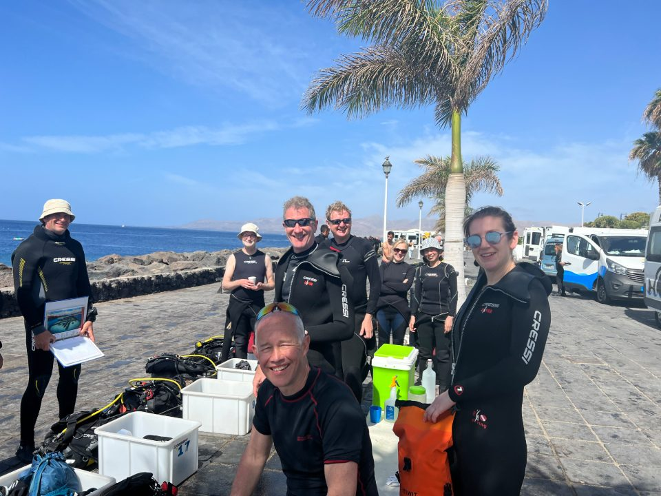
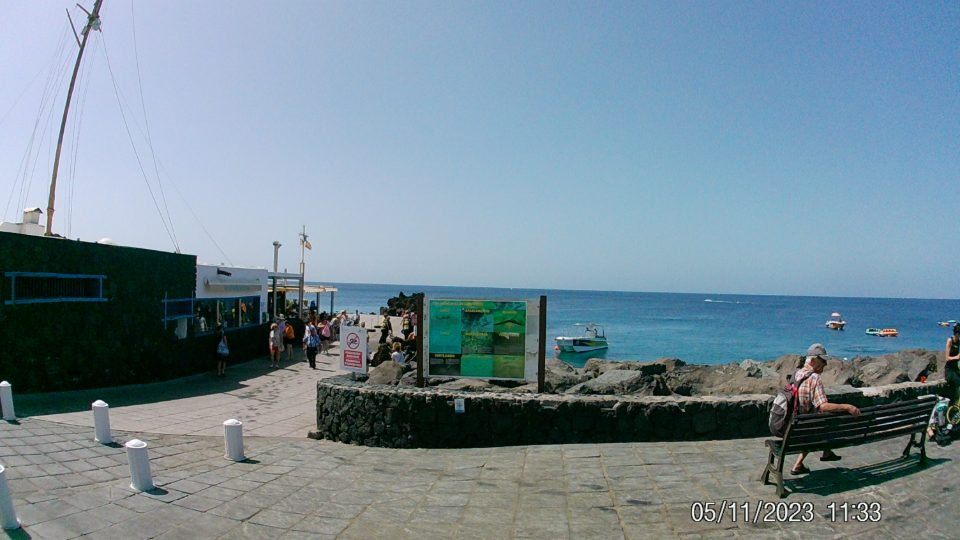
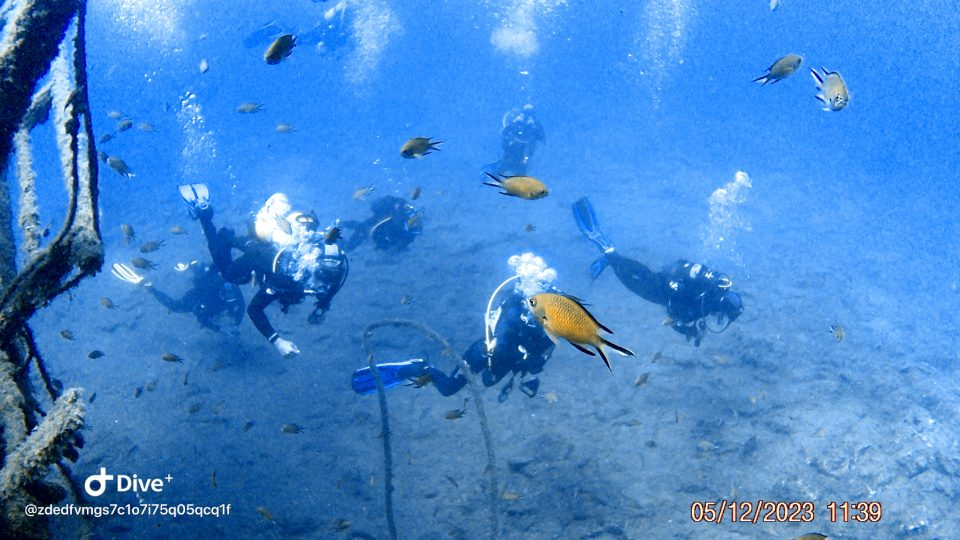
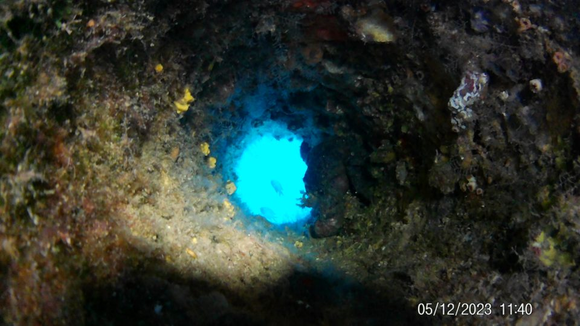
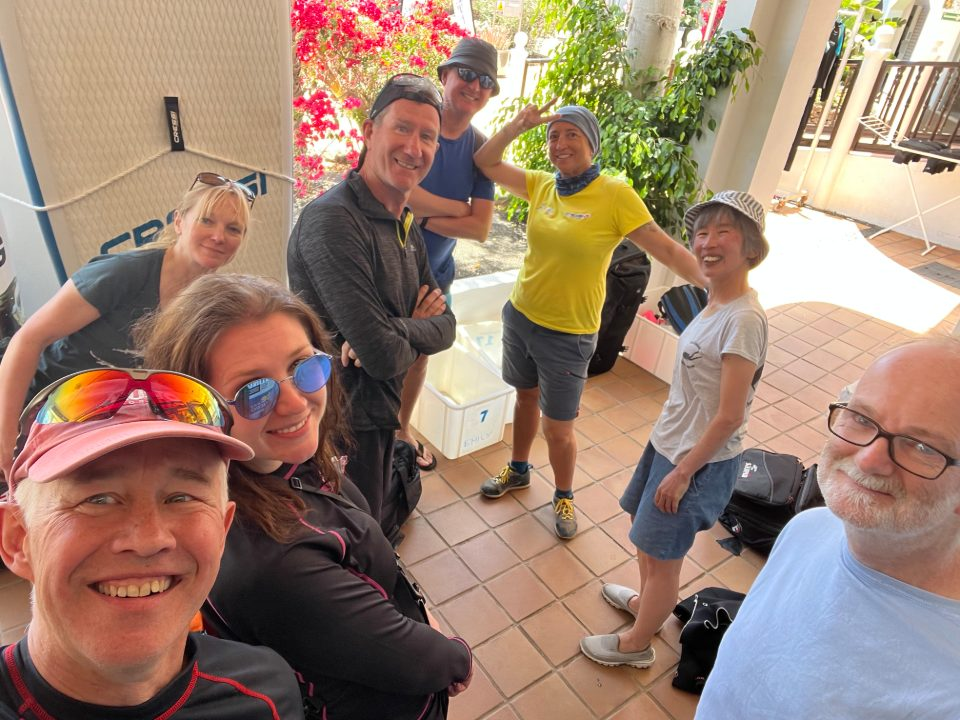

Lanzarote, 10th - 14th May 2023

Warm water diving, bright sunshine, gentle breeze to cool down after a beautiful days diving in the clear waters off the coast of Puerto del Carmen, Lanzarote. What could be better we asked yourselves.

Warmer sea temperature for starters say Akiko and Emily. Less wind we all say. It's fair to say we were taken aback by the cool water which managed to penetrate our ( mostly) hired 7 mm wet suits , including hoods.
When I say "we" were taken aback after the first dive, I don't include myself, as I was left high and dry and warm by the jetty as everyone else boarded the rib ( see below) and set sail to the nearby dive site. Due to an equipment malfunction I tried the coffee n cake of a local cafe.
Poor Akiko was colder than Claude van Dam in the Coors Lite advert and later looked like ET during his famous bike ride scene returning from some dives. Getting in and out of the rib to steep, stone steps was not for the faint hearted or those weak at the knees. By the end of day one it was clear Katerina was in for a tough time with our dive guides, what also became clear was she was not in the mood to take any nonsense from them, although the offer of their octopus did come in handy from time to time.
It should be noted that the visibility was great, the rays were plentiful as we're the barracuda, sardines, the volcanic rock formations gave a lovely contrast to the beautiful sea bed. This theme continued throughout the 3 days x 6 dives.
We were given good guidance not to disturb the resting female rays as they had come to give birth. Likewise an unwritten rule is don't assault your fellow divers, trying telling Akiko this after Trevor battered her head with his fins repeatedly at 25m. With Trevor's antics, the sea temperature, relatively strong current poor Akiko must have felt like she was being punished for some unknown misdemeanours.

Meanwhile back on shore Gareth had hired a sleek cycle and was hurtling up and down the hilly roads gaining his normal t shirt and shorts tan, which to the untrained eye looked very red indeed.
Following our local dives we headed off in the minibus to Playa Blanca, suddenly familiar to those who had been to Lanzarote several years ago. Only this time we were treated, Mmmmm, to the Italian Sardine magician. A well known local celeb who was pulling Sardines out of a tin, like a magician with a hatful of rabbits. He showed us his skills by as one witness said "yanking that Moray from beneath the rock" and feeding it MasterChef prepared Sardines. Once would have been enough, but oh no, Super Mario was not content until he had fed every Moray and Grouper within a 5 mile radius.

The return journey to the dive centre saw the wet pant duo of Trevor and myself banished to the small van driven by Guy the guide and former international fashion sales icon.
Our final meal was no more than 20 paces from our apartments, which was handy for the Eurovision party thoughtfully arranged by our Croatian representative Katrina afterwards. In fact the sight of the Croatian group in white Y fronts was one of the standout performances. Chris was probably the most enthusiastic viewer demonstrating his self confessed eclectic task in music by calling out a Sugababes number being covered by a previous winner, i feel Popmaster is awaiting your presence Chris !
Following a good night's rest, sorry Trevor your illness was Akiko's pay back, most of us made our weary way back to Blighty to resume the daily grind.
Many thanks to Chris for organizing a great trip and of course all Argonauts for making it another memorable Spring dive.

Reported by Phil J, Photos by Katarina and Alex